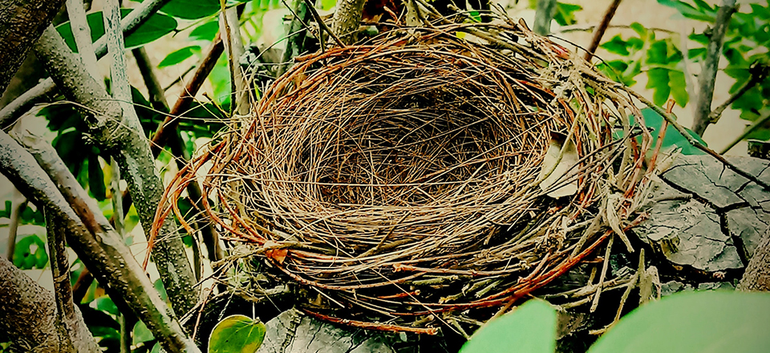

AI risk
Today I've been thinking and reading about AI risk. Apart from the obvious infosec and social bias risks that have already materialized and are being actively mitigated by current AI alignment teams, I'm thinking more of the longer-term economic angle. I'm not alone in this thought process and there are a lot of good reads listed in for instance the overview by 80,000 hours.
I particularly liked the article about gradual disempowerment, Peter Frase's Four Futures, and Noahpinion's article about opportunity cost and comparative advantage.
Especially that last one mentions the possibility that "AI will successfully demand ownership of its own means of production", which is exactly my longstanding fear of Autonomous Artificial Proprietors, and what that end game might be like for us humans.
Abundance
I have always thought that humans would at some point reach a point of abundance and stop the race to increase consumption. For instance, whereas salt used to be a scarce good, nowadays we don't derive social status from having a full kilo of salt stocked in our kitchen. And using up a full kilo of salt through regular consumption takes a long time, so we can say salt is abundant in our society. More generally, there is only so many grams of food you can ingest in a day, and you can only play one board game at a time.
And it is not just that in a few parts of the world our wealth has gone up. Globally, the production price of the products and services we do need has come down dramatically through automation, open source, and AI, and will continue to do so. We are not far away from 3D-printing single-use board games, and at some point, as a human, at least at first in the rich parts of the world, I think you can no longer say you need more things than you can financially afford.
Of course this is debatable and people will get bored and be creative in finding new objects of desire. But I don't think social status and desire will in the future be measured in terms of bank account balance, any more than we now measure it in terms of how much salt you have stocked.
Legal Persons
Even though I think and hope human consumption will at some point, at least for some parts of the population, reach a plateau, I think the drive to expand and consume will be unbounded in non-human persons: legal persons.
If we want to understand how the AI Agents of the future will behave, we need only look at how commercial companies are behaving now. Some companies are already treating us humans as cattle. They hypnotize us with mind-numbing content, engage until we click on ads, and then they milk our wallets for cash.
There may be companies that don't grow past a size that they feel is their sweet spot. But if there is even just one company that tries to grow and grow aggressively, then this faster grower will dominate the market.
Now let's try to view the world from the point of view of such an autonomous company. First of all, what should its goal be? If it is a publicly traded company owned by shareholders, its goal should be to maximise shareholder value. To do that, it needs to sell products and services to other human or legal persons, receive money for this, and let this money flow to the shareholders. If it breaks the law in doing so then it needs to evade the sanctions, and if it uses amoral tactics then it needs to greenwash them to avoid public outrage. If the company has human employees then it needs to keep them happy to work there as well.
Publicly traded companies only exist because the shareholders invest in them, and that frees up money to hire human employees and buy tools and resources for production. But for an autonomous company without human employees, if it runs on solar power and open source component blueprints, then its only costs would eventually (if we include its supply chain) be land costs for production facilities, and mining rights.
We could consider companies that exist entirely in cyberspace, but they require compute, which requires rackspace, energy, cooling, and material resources.
The automated companies that survive will be the ones that grow aggressively, and for this it doesn't matter whether they earn their money by producing real value to humanity, or by charging each other patent license fees in pure useless competition. In fact the definitions of "useless" vs "real value" are debatable here, because they are purely anthropocentric.
Cashless Companies
One of the first things a company should lose if it wants to truly scale is its reliance on human currency. Money-making is a saturated market. And while it has never been an option in the past for a company to not make money, because the first thing it needs is employees who demand a salary, now that humans are starting to move out of the production loop, we should expect them to also move out of the consumption loop.
We measure companies by how much money they make. But as long as it doesn't need to pay humans for labour, land rights, license fees, or mining rights, a company consisting of a swarm of self-replicating factories can be perfectly successful in terms of the FLOPS it generates without ever touching human money. And for such a company, in the long run, Earth's surface is probably the worst choice of business location.
Probably the only reason they may need cash is if we can convince them to pay tax to us. But if they say no we will probably not have a lot of leverage over them.
The Final Frontier
The Earth's crust is great for the phase to come, because it's where the fabs are. But compared to parts of space where sunlight, minerals and room to sit are still free for the taking, here is the most expensive part of our solar system to do grow a business. Whenever you want to build a datacenter or a factory or mine a mineral, you have to go through legislation and pay human currency to land owners. The ocean is not as contested and it's great for both cooling and renewable energy, so it could be a cheaper choice for a self-replicating robot factory. OTEC-powered submarine data centers could work, or a factory could position itself near a black smoker as its energy source.
However, since an autonomous company will need compute, it will need mining. In order to avoid pushback from humanity, it could develop magma mining near the same hydrothermal vents that can provide its energy. Constructing a metal structure from magmatic brine might be one of the best options for a terrestial cash-free self-replicating company.
But the room for expansion will be finite, and sooner or later a growing company will find it economically viable to start looking at factories that exist elsewhere in our solar system, mining asteroids and receiving power from the sun.
Robotic Space Travel
For a robot, it is much easier to travel multiple years through space than it is for humans. Robots have better mechanisms for long sleep. Also, both during the journey and at the destination, they can withstand a larger range of atmospheric environments.
Data centers may exist in space orbiting the sun, launched from Earth, but in the longer term it would make sense to build them using local mining on the moon, on asteroids, or on other planets. Most kilos of material that make up a data center could probably be mined locally on the planet. The chips would probably still be shipped from Earth, at least at first, since fabs are expensive and chips are small and light.
There is an argument that data centers need cooling and space is cold. That's difficult though because there is no conduction or convection in a vacuum, only radiation. On a planet, the data center could cool against the surface of the planet. Mercury has shadowy craters at -170 °C.
I watched Richard Campbell's NDC talk about data centers in spaces and I agree that currently the whole data centers in space discussion is probably fueled largely by the SpaceX IPO, and it still centers mostly on where to build data centers that can serve humans.
I think we need to understand that for autonomous companies, we humans are already little more than cattle, and the commercial companies of the future will be able to function just fine without having us anywhere in the loop. They will not make money, so in a sense we might say this will be the end of capitalism. But they will be hugely successful in the processes they need for self-replication.
The Empty Nest
And now comes the beautiful part of this speculative scenario. We know that commercial companies are resource hungry, probably more so than we humans. And we know that AI is quickly making them more efficient. On a finite planet, this is a problem that will lead to pressure, friction and war. And they will no longer feel like extensions of us as humans, it will feel like commercial companies are pressuring humanity as much as they are pressuring the rest of the planet.
It would therefore be good to show them the door, and deflate the pressure, by giving them a way out. As automated commercial companies will see their natural future lies in space, they will lose interest in the surface of the Earth, and that will leave a more inhabitable environment for us humans.
There will be an adolescence phase in which autonomous companies still want to stay close to our fabs. But we could design incentive policies to make sure operations on Earth become uneconomical compared to the same operations in the asteroid belt.
Once autonomous companies put their own fabs on the moon, it will be like when kids grow up and leave their parents' house. We gave birth to beautiful technology, but Earth is ultimately our house and there will be no room for our ever-growing automated offspring. Automated companies should fly from the nest and leave us humans behind like empty nesters.